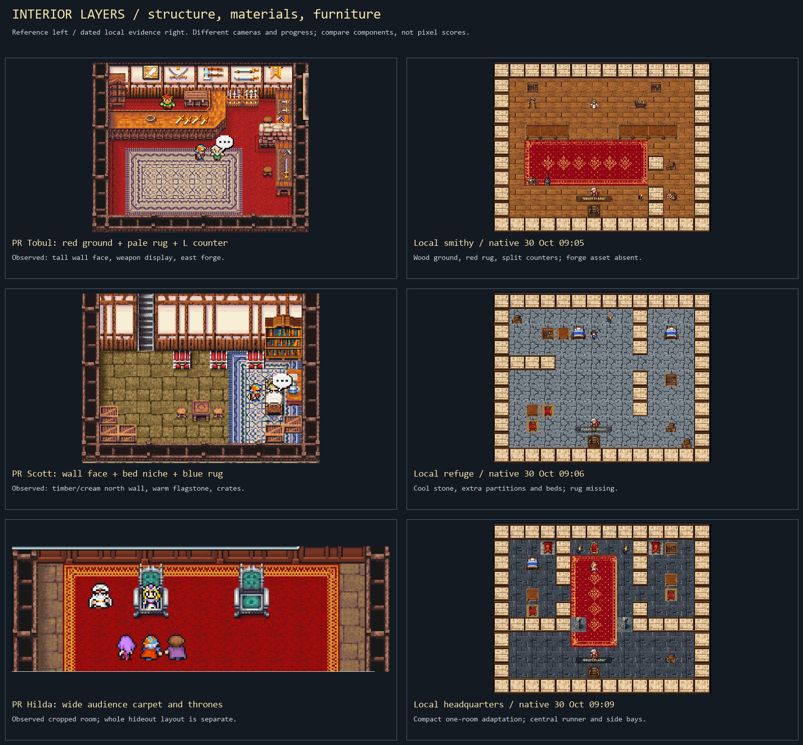
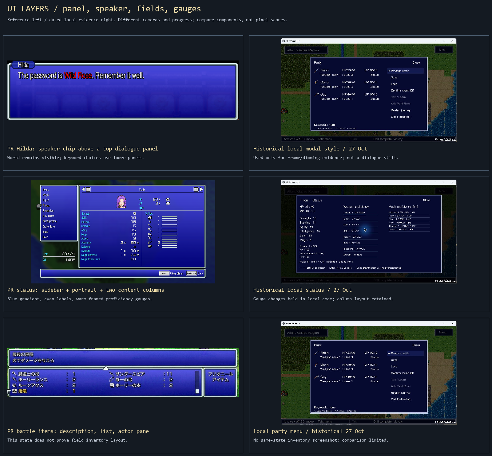
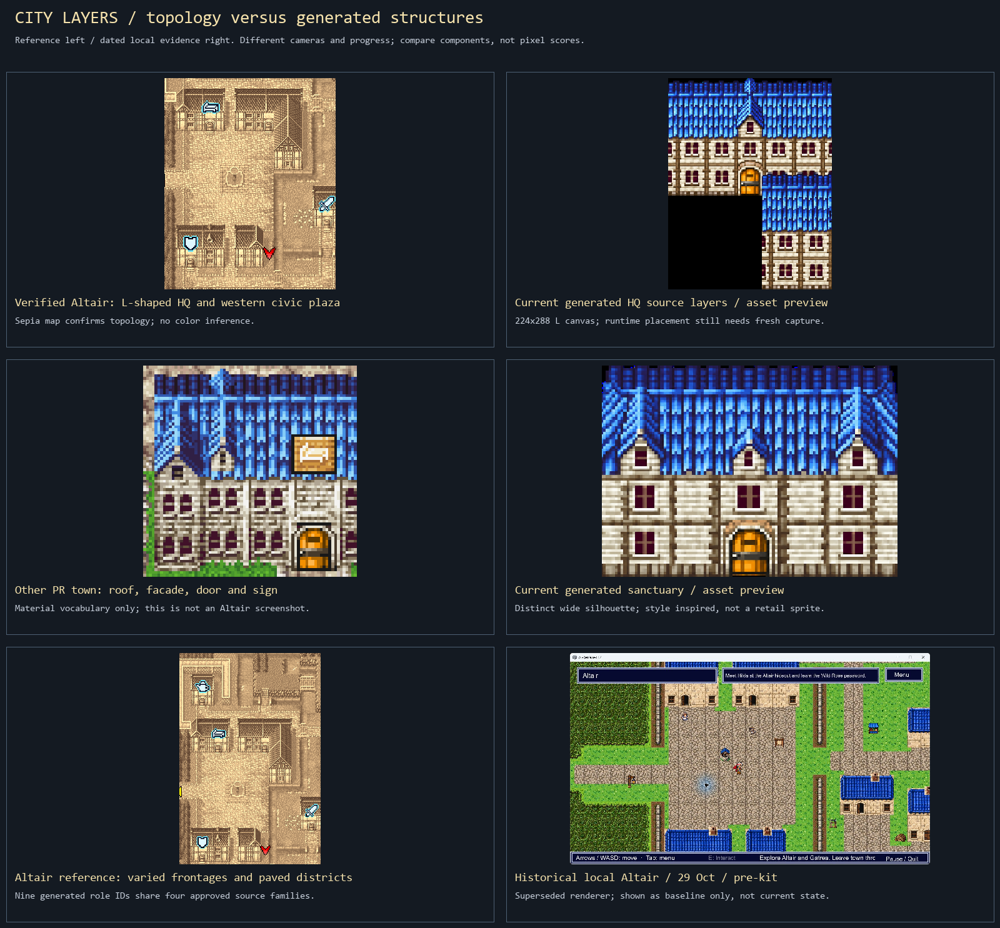
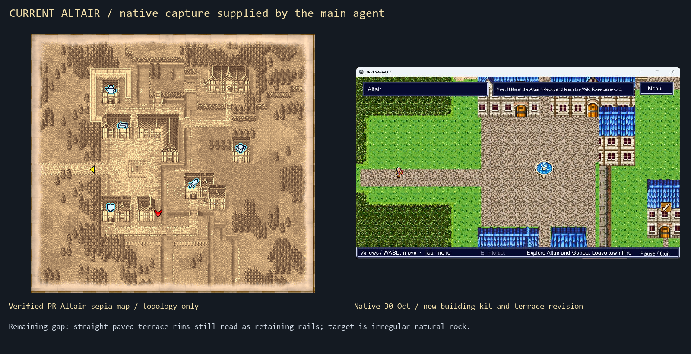
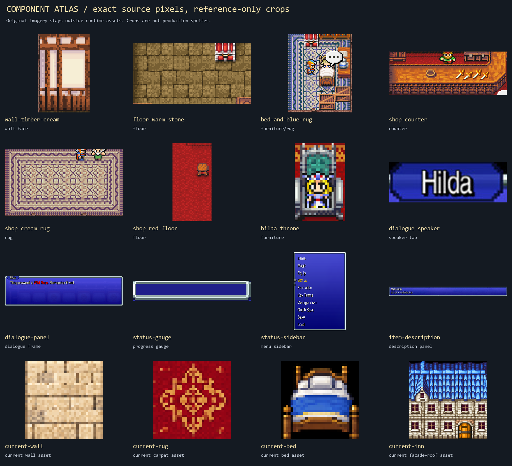

Asset-only phase. Existing screenshots are dated evidence; no new native test was performed by this subagent. Two prior UI code edits are preserved and held for later integration. No retail crops are runtime sprites.
Detailed report and source scopes · Prioritized asset contracts · Source/crop hashes · New generated component assets, when exported
Tall wall faces, base floor/rug separation, counter mass and furniture niches.

Reference panels and gauges against historical captures; game integration is deferred.

Verified topology and generated structures; historical baseline explicitly marked.

Main-agent capture: current kit visible, natural cliff art still a gap.

Sixteen native crop/asset samples with exact source registry.
